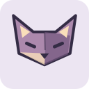
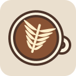
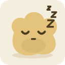

La buena compañía.

Ada MossIdeas que toman forma
Mara SolUna taza y un bocetoBrisa BotPequeñas automatizaciones
Crea avatares para perfiles, equipos y bots. Escribe un nombre, elige entre trece colecciones originales y ajusta la forma y los colores.
npm i lazy-avatars
Ejemplos de equipo, perfil y comentarios con identidades ficticias.

Ada MossIdeas que toman forma
Mara SolUna taza y un bocetoDiseñadora de pequeños mundos.
Hoy he cambiado el avatar del proyecto. Ya parece un poquito más nuestro.